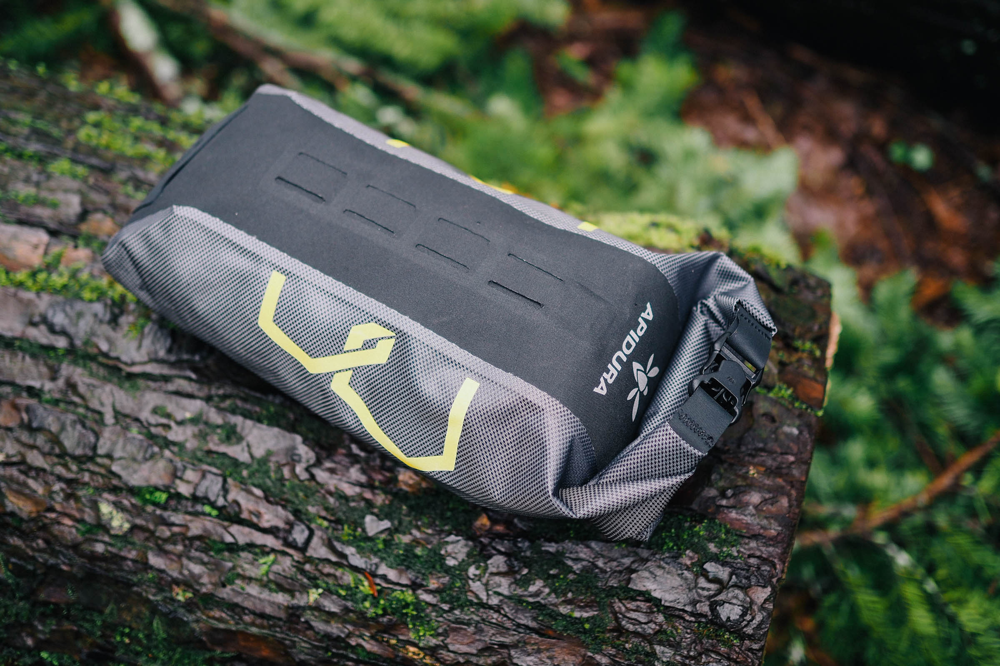

Apidura fork pack
Цена от 9800 сом
Apidura Expedition Fork Pack — премиальная сумка для байкпакинга, часть серии Expedition, разработанная для установки на вилку через крепления на cargo cage. Изготовлена из лёгкого трёхслойного ламинированного материала, устойчивого к разрывам и истиранию, с полностью герметичными швами для полной водонепроницаемости в любых условиях. Доступна в объёмах 3 л и 4 л, идеальна для длительных велопоходов и экспедиций, где важны лёгкость и надёжность.
Заказать
← Вернуться в каталог